✅ Basics
- Name: Marta
- Location: Berlin
- (when dates) is looking to date: men
- Relationship style: currently monogamous
- Currently: partnered
- Kids: used to be a no, pondering adoption
Personality summarised in a meme
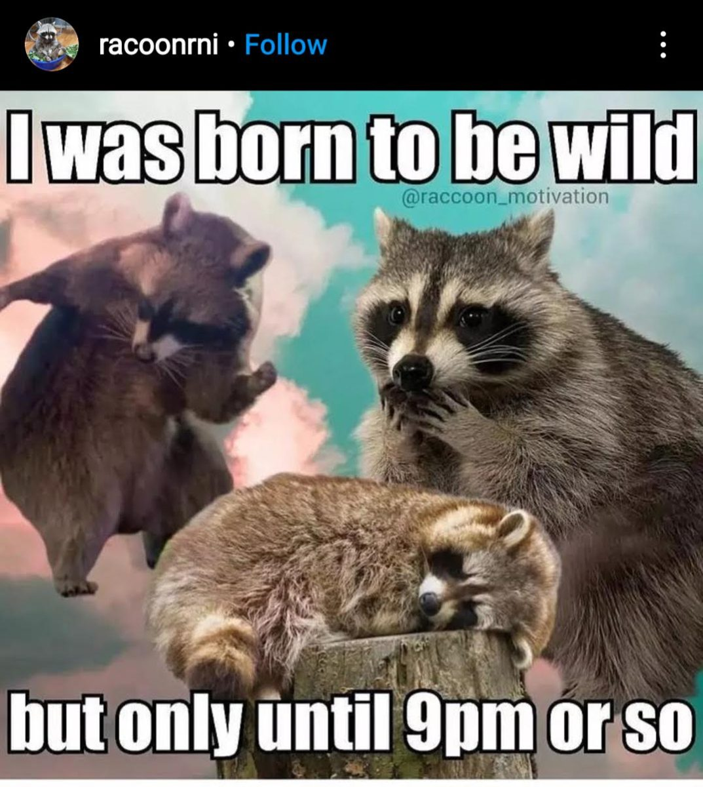
Loves comfort zone expansion, but prioritises sleep!
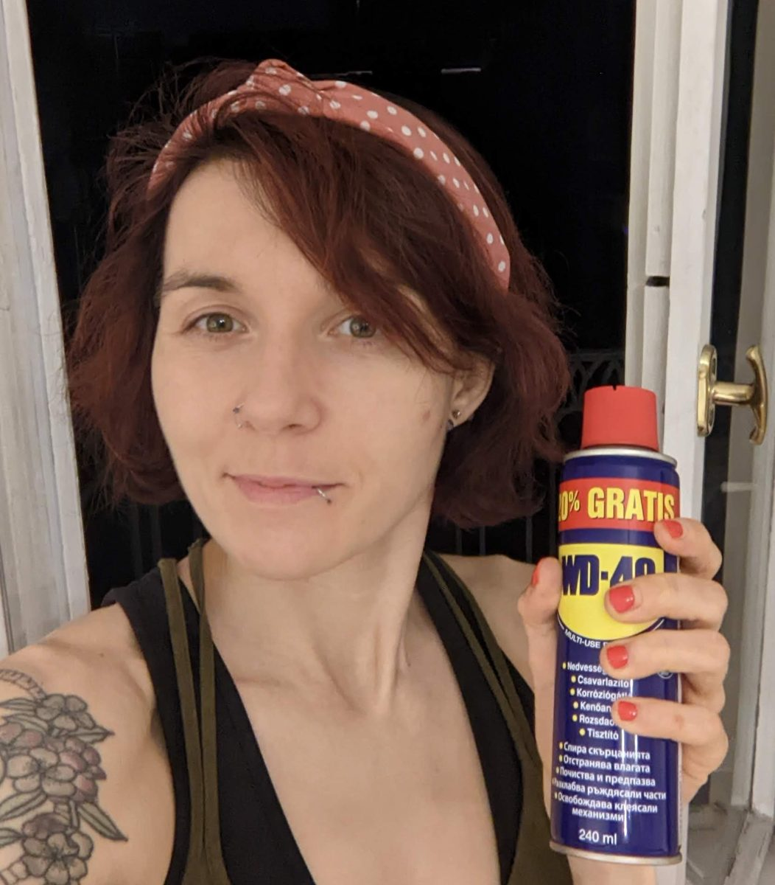
💁♀️ What you’d be getting into
Some labels I identify with*: vegan, atheist, effective altruist, aspiring rationalist, eating disorder, digital nomad (now ex).
*with a caveat “keep your identity small” (PG)
On a good day I'm open to new experiences and my autocomplete is like one of the first LLMs set to high temperature. Random, but not always appropriate. It shows in thought jumps and abstract (sometimes not very PC) humour.
On a bad day, my world view becomes narrow and negative. There are in me parts that are self-critical and sometimes won’t shut up, especially about intellectual performance and body shape.
Selected thinkers & media that influence(d) me: Sam Harris, Finite and Infinite Games (James P. Carse), Kurzgesagt, Spencer Greenberg, Y.N. Harari, Tim Ferriss, Tsurezuregusa (Kenkō).
😆 Laughing. Examples of things I find funny
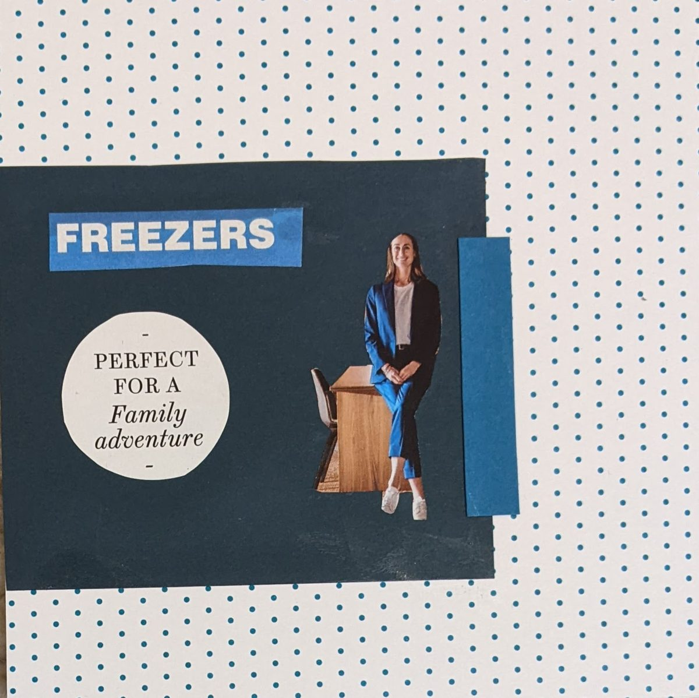
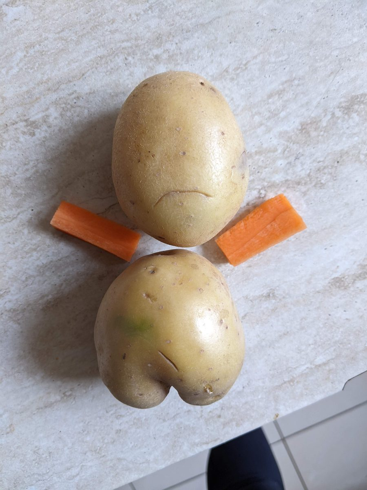
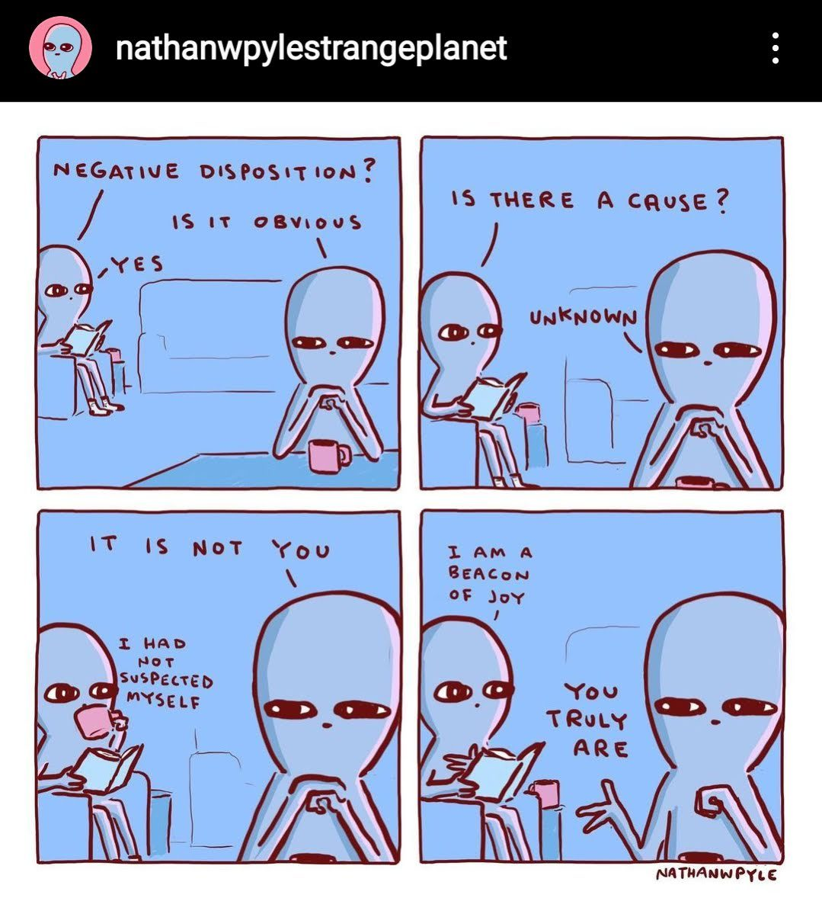
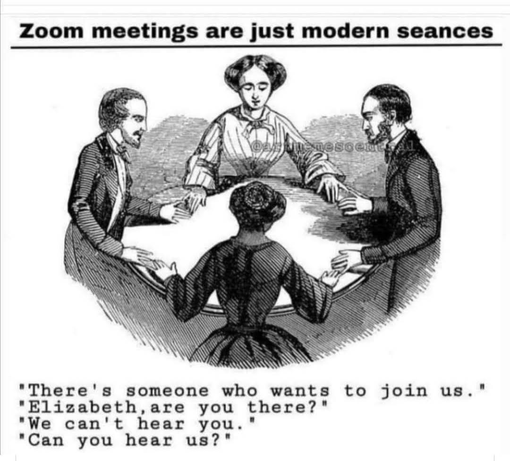
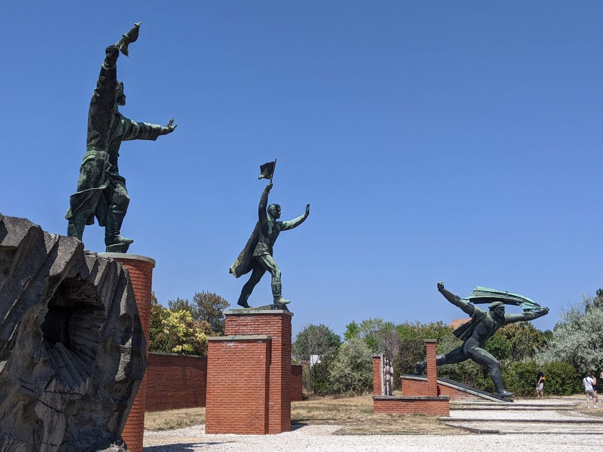
⭐ Amazing. Top features to be aware of
Click the arrows for examples
🙃 Adventure seeker (but also a badger). I enjoy new experiences, especially if they involve new sensations and comfort zone expansion. At the same time, I need a lot of time for myself - hiding from every form of stimulation. It’s sometimes challenging to tell (even for me) whether it’s a healthy boundary preservation or a strategy to avoid challenges.
I’m the person who wants to try every experience in a new city, especially if I haven’t done it before. I was not like this for most of my life, so I feel I have a lot to catch up on! 😬
But cf. the meme at the start. I’m someone who’d get up at 7 am run 15k, read a paper on AI, drop acid, and go to bed by 10 pm. (real example)
🤩 Projects, plans, excitement! I usually have side-projects and self-development goals that I work on alongside work. Organising events for friends is something I enjoy. In the best of moods I like to break or play with social conventions.
I’m the one who’d send a message “hey does anyone want to [go to the shooting range, ride an old tram, do trampolining]” and then coordinate a group for an outing.
I sometimes enjoy dressing in unusual clothes without an occasion or rolling on the floor in art galleries.
😺 Curious communicator. Several people have remarked that I have good communication skills, which makes it easy to talk to me. I aspire to be more comfortable with tell culture, practice NVC, and enjoy exploring different ways of understanding relations between people (authentic relating, radical honesty).
Good communication skills should (and do) make me feel proud, but in early dating it can lead to situations where the load of the conversation rests on me. The other party ends up having a great time (them 🗣️ :”it’s so easy to talk to you, let’s meet again!”) while I’m exhausted (me 💭: ”this was uninspiring work”). Let’s not do that, ok?
I enjoy structured communication exercises, e.g. cards with conversation prompts (e.g. askhole.io), 36 questions to fall in love, etc.
⏰ Organised. Being tied to my schedule gives me a sense of comfort. In extreme cases I become quite anxious when my schedule faces a danger of being disrupted. When I notice this thought pattern, I try to deliberately disrupt my schedule, typically by travelling somewhere.
I have a very solid morning routine which I will rarely change. It can be hard to have a conversation with me before I’ve completed it.
I very highly value maintaining my sleep-wake cycle (7am - ~10pm). Bad sleep leads to bad mood, and with a Marta in a bad mood there can be collateral damage.
BONUS! Want to see results of some personality tests?
👉 Get it NOW for just $17.97! (FREE delivery!) 👈
😠 Challenging. What others can find difficult about me
aka previous dealbreakers or just things that were somewhat hard for others, these are basically the other side of the coin of the top features above!
- I sometimes work a lot. I like to talk about my work, because I also try to work on projects that feel meaningful and interesting. Together with personal projects, it means my time is limited. It can be hard to add to this schedule a relationship with someone who doesn’t share many of my interests or goals, or doesn’t want to participate in the events I organise.
- I often need to spend time by myself or just keep a lot of bandwidth for myself. This is aside from work time, relationship time, and organised social time. This can be a dealbreaker for people who need a lot of attention from their partner.
- I ask many questions and often need many clarifications about what others mean. People who are not used to this style of communication can interpret it as antagonistic, or motivated by some kind of Agenda. In reality, I deliberately try to avoid Agendas.
- Out-of-norm way of dressing or behaving in public places—some find this uncomfortable. Are you one to play along?
- I have eating habits and food-related behaviours that can be seen as strange. E.g. My main sustenance for days on end can be tofu blocks with mustard, or buckwheat with broccoli. I also have irrational aversions towards specific food items (e.g. will not eat pizza), so cooking for me can be hard. For people who love sharing three meals a day, or for whom food is a central point of focus, this can be challenging.
✌️ Doing. Hobbies, interests, goals
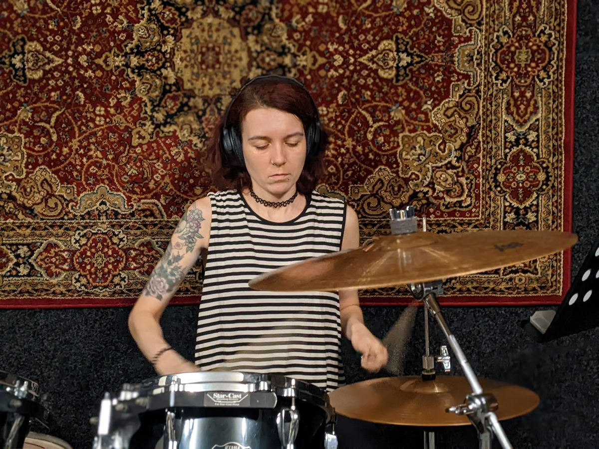
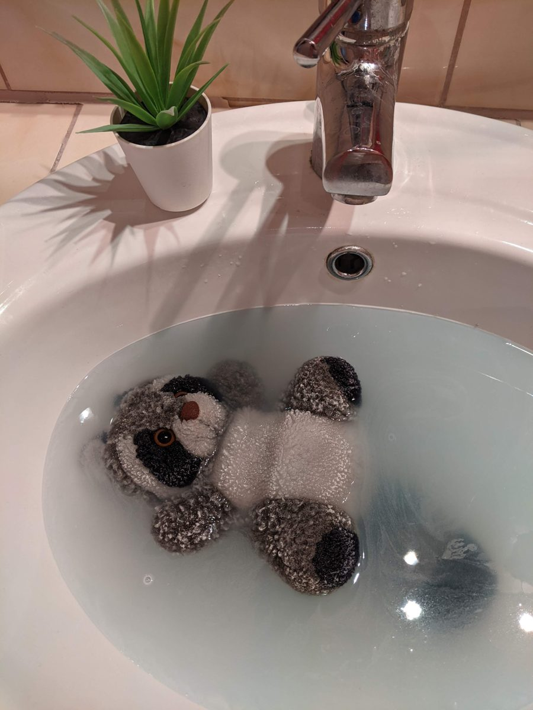
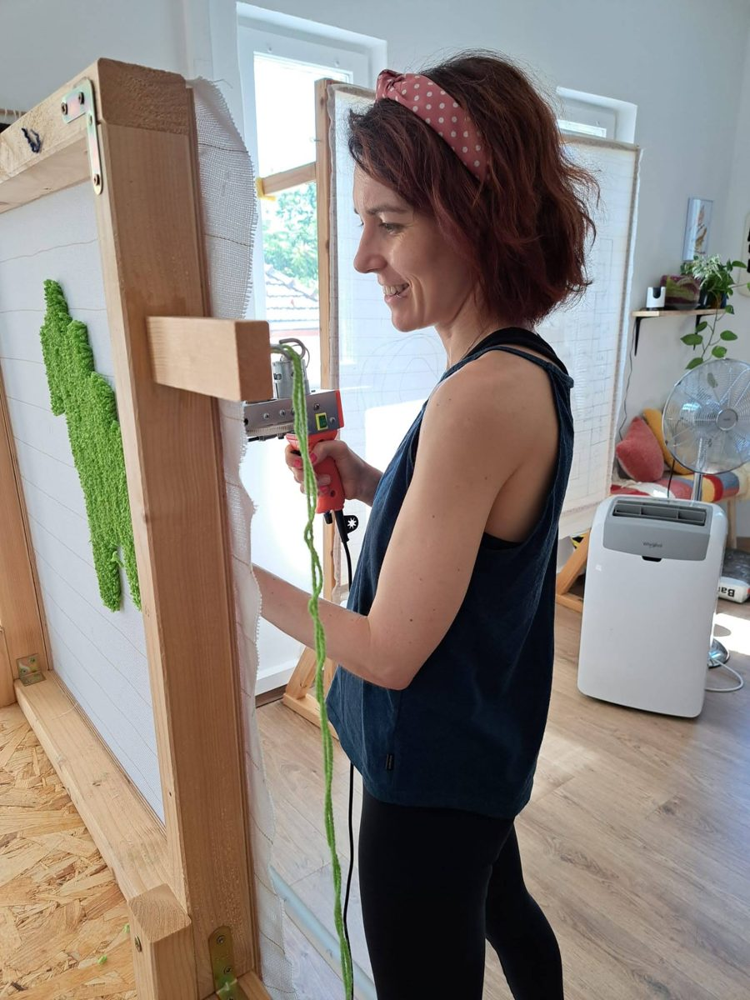
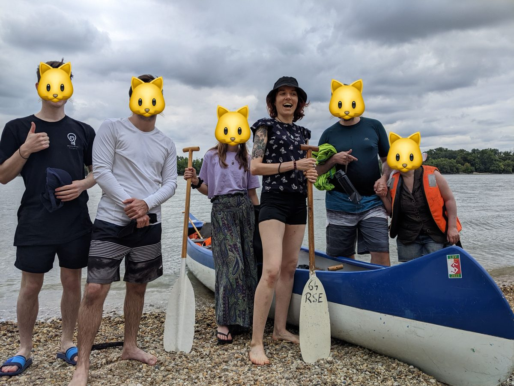
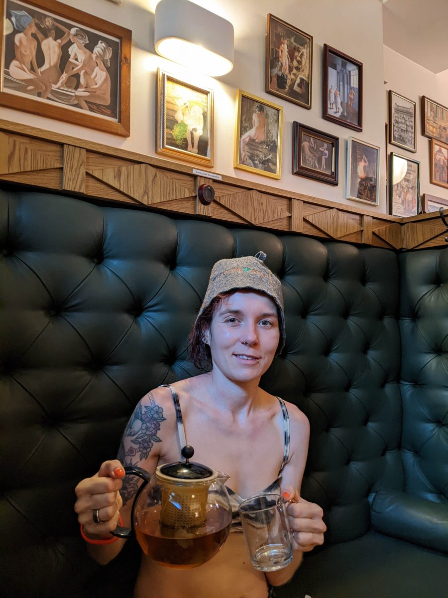
- Work-wise see LinkedIn.
- Exercise. I do sports every day, admittedly somewhat compulsively. Usually strength, calisthenics, running, or aerial arts. I’m always up for trying more sports! I would like to try martial arts one day, or get good at acro yoga.
- Projects. I like to make things, virtual (e.g. no code apps) or real (e.g. collages, objects). I’d like to make more. Examples.
- Woo-adjacent and “weird” activities. I’m curious to explore what strikes me as weird, mystical, or new. You’ll see me attending ecstatic dancing events, cacao ceremonies, non-verbal communication workshops. My epistemological foundations should be sound enough to protect me from adopting any aura-based worldviews that are often prevalent among the crowd that attends these events.
- Things I like to, or find easy to talk about: language learning, start-ups, product development, productivity tips, sleep optimisation, relationships, anki.
- A (definitely non-exhaustive) list of things that I want to try, do more of, or learn:
play bass guitar (in progress), understand economics, parachute jump, modern dance, scuba-diving, linear algebra, surfing, brazilian jiu jitsu, acroyoga, drawing, building electronics, go to a Wim Hof retreat, to South America, travel around the US, play drums on stage, do more AR courses, go to more burns, have a pet, make own kombucha (tried and succeeded 1/3 times), make more collages, silent meditation retreat
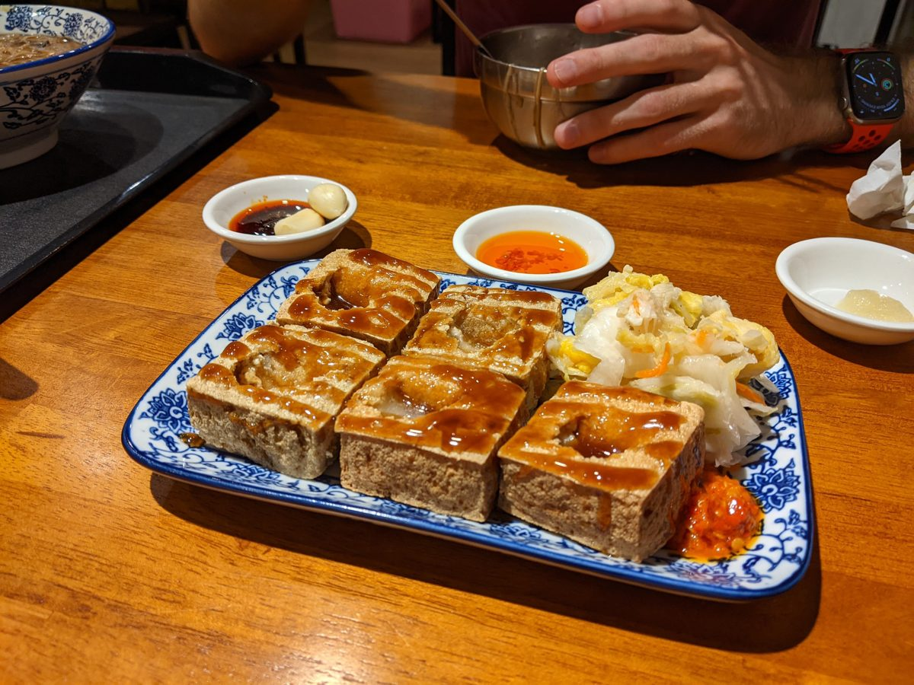
✅ try stinky tofu Dec 2023 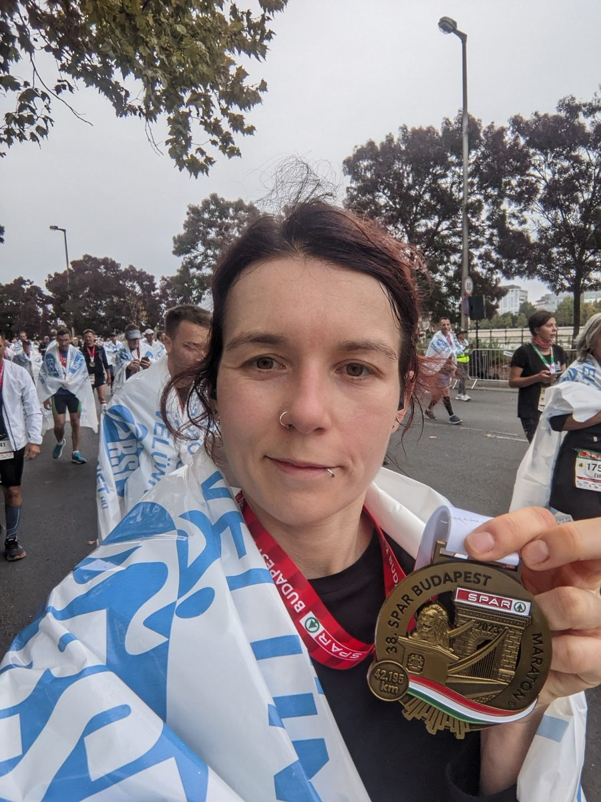
✅ run a marathon, Oct 15, 2023
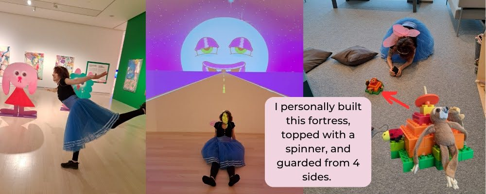
🙅♀️ What I’d not be getting into
aka. my dealbreakers
- Lack of self-awareness or ability to take responsibility and work through one’s own issues. We all have problems. I expect a partner to be aware of theirs and actively work on them.
- Lack of acceptance for the idea of reducing the consumption of animal-based products. If not vegan, I’d like a partner to be at least open to eating less meat. Being a judgemental prick about vegans is a dealbreaker.
- Being tied to living in one place. Travelling is an important part of my life, and I’d like my partner to travel with me at least some of the time. I now have “a base” — one city that I feel bound to, but I still envision spending 3-6 months a year somewhere else.
- Aversion to sexual exploration. I’m kinky enough to have a FetLife profile and occasionally attend fetish parties and sex/body-positivity workshops. You don’t have to always join me, but a total lack of interest would be a dealbreaker.
🫶 Togethering. Relationship views & preferences
How I’d like for both of us to feel when we’re together.
I’m looking for a stable partnership/companionship where we protect and prioritise each other, while staying separate individuals. It’s important to me that we inspire and support each other in becoming better versions of ourselves, whatever it means to each of us.
They say: you’re an average of the five people who you spend most of your time with [citation needed]. I want to share, and make an honest attempt to live by, the same values.
What are these? Some ways of thinking about it:
- My intrinsic values: Freedom, Truth, Learning, Virtue, Non-Suffering [1]
- 12 virtues of rationality
- 5 secular values: truth, compassion, freedom, courage, responsibility. (which I believe I got from Y.N.Harari, but Google’s not helpful finding the quote)
How do we live together by these values?
Pffff, you tell me! We talk (a lot), we question each other’s views, we try new ways of learning about ourselves, read poems, write code, dance, take psychedelics, whatever’s necessary.
In short, we try to work on it.
Because relationships are work.
(I realise, I’m making this a hard sell. 🙃)
In reality, we’ll probably first vomit on each other our childhood and relationship traumas and see how they interact. We’ll have to deal with it and I think it’s healthier to do it consciously and openly.
The status quo of relationships seems to be that you become emotionally entangled to some degree. It’s fun to be all about each other for like 3-5 months, but is suboptimal in the long term. Enmeshment is the Moloch of relationships, and fighting it requires some effort. Answering the timeless question “where do I end, and where do you start?” will likely be an ongoing project for us to work on (but that’s not a bad thing!).
I also see us living as a part of a community or a group of friends, not as an isolated unit that exists against the whole world.
I’m very conflict averse. I prefer to keep a “low-threshold” in communication, that is, to bring up every small thing that I find bothersome and discuss every minor interaction that seemed awkward. I believe that this approach, based on radical honesty, mindfulness, and authentic relating practices, helps prevent resentments and larger disagreements from arising. Generally speaking, good communication is good!
🌊 ………….. To put it more poetically …………….. 🌊
I’d like us both to feel comfortable sharing silence.
But, also to sometimes go out to party together until 4 am [2].
I’d like us both to give each other freedom to explore the world separately to then recount stories about what we discovered.
But, to also have a shared goal, worldview, an idea or project we aim towards or build together.
I’d like us to write poems and read Less Wrong, build sand castles and destroy false beliefs [3].
And, if we decide to not be together anymore, I’d like us to not regret the time we shared.
💌 What now? Contact
If you got to here - thanks for reading! Now, if you think that:
dating Marta sounds like it could be your game 👉 write to me at SoYouWantToDateMarta [at] gmail [dot] com
→ ❗As mentioned above, I’m not currently emotionally available for dating. I’ll take your email as an expression of interest for the future.
→ send me your dating doc if you have one!
-
it’d be cool to be friends (or just found this an entertaining read) 👉 feel free to write! Getting even just two sentences of positive vibes/feedback will make my day.
- “omg, her and my friend [NAME] would really get along!”, feel free to forward this doc to your friend [NAME]!
- you’d rather hire Marta as an ops pro (not an unlikely result), add me (but write a note too) on LinkedIn
What if you already know me?
I recognise it might feel awkward to bring up the dating topic in a regular conversation. To open the topic of a potential more-than-friends interest, feel free to contact me through the regular channels (WS, Telegram).
I know it requires a lot of vulnerability to do that, because: What if I’m not interested? If I’m not, I’ll gently tell you that, and we’ll stay friends.
If you think you’ve already signalled romantic interest in a regular conversation and I didn’t respond (e.g. you tried flirting and I didn’t flirt back), I’d still encourage you to write to me. I can really be blind to these signals. Unless I’m explicitly told “hey, I like you. Do you wanna go out with me for like a date-date?”, I might not understand the signal.
Footnotes:
[1] Based on Clearer Thinking Intrinsic Values Test. [⤴️ back up]
[2] Alternatively: Create art, Read Less Wrong, Update beliefs, Delete boundaries to happiness. ← not as poetic as I’d like, to but I couldn’t not make a CRUD reference. [⤴️ back up]
[3] On those rare days when my inner party raccoon decides to be up past 10 pm. [⤴️ back up]